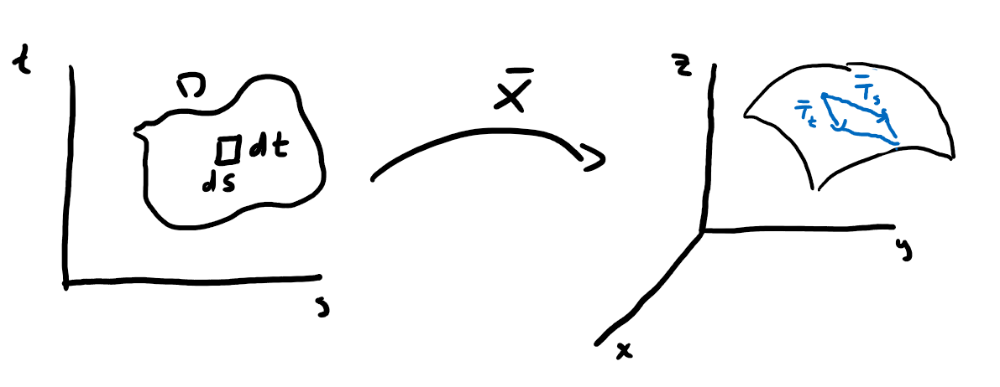
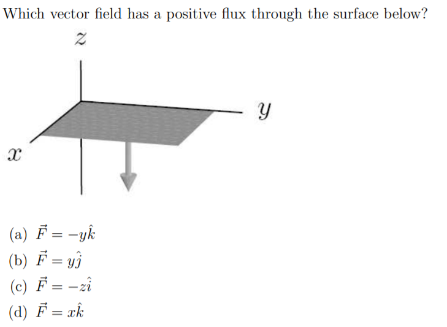

So far in the course we've seen surfaces represented two ways:
as a function \(\displaystyle z = f(x,y)\)
example: \(\displaystyle z = \sqrt{x^2 + y^2}\) is a cone.
problem: Not every surface can be written as a function.
as a level set \(F(x,y,z) = c\)
example: \(\displaystyle F(x,y,z) = x^2 + y^2 + z^2 = 4\) is a sphere.
problem: Hard to define; may not work for all values of \(c\).
What can we do to describe surfaces more generally?
Definition: Let \(D\) be a region in \(\mathbb{R}^2\) that consists of a connected
open set, possibly containing some or all of it boundary \(\displaystyle \partial D\).
A parameteritized surface in \(\mathbb{R}^3\) is a continuous function \(\vec{X}: D \subseteq \mathbb{R}^2 \to \mathbb{R}^3\) that is one-to-one on \(D\), except possibly at \(\partial D\). We say \(\vec{X}(D)=\vec{S}\) and \(\vec{S}\) is called the surface.
Think about parametric equations or vector valued functions, but with two parameters.
\(\displaystyle \vec{X}(s,t) = \begin{bmatrix}x(s,t)\\y(s,t)\\z(s,t)\end{bmatrix}\)
Examples
\(\displaystyle \vec{X}(s,t) = s(\hat{x}-\hat{y}) + t(\hat{x} + 2\hat{z}) + 3\hat{y}\)
What shape is this surface?
What is the parametric representation for a sphere of radius \(a\)?
What does it mean to be tangent to a surface? more
We define the normal vector as \(\displaystyle \vec{N} = \vec{T}_s \times \vec{T}_t\) provided \(\vec{T}_s, \vec{T}_t\) exist and \(\vec{T}_s \times \vec{T}_t \neq \vec{0}\).ExampleWhat is the normal vector for the torus \(\displaystyle \vec{S}(s,t) = \begin{bmatrix} (4 + 1\cos(t))\cos(s)\\ (4 + 1\cos(t))\sin(s) \\ \sin (t)\end{bmatrix}, \hspace{1cm} s,t \in [0,2\pi]\)?
Example cone
Consider the cone \(z^2 = x^2 + y^2\).
Find a parameterization of this surface.
Compute a normal vector.
When is the normal vector not defined? Does this make sense?
Area elements
Question: What does a surface area element \(dS\) look like for a parametric surface?

\(\displaystyle \Delta S \approx || \vec{T}_s \Delta s \times \vec{T}_t \Delta t || = ||\vec{T}_s \times \vec{T}_t || \Delta s \Delta t = ||\vec{N}|| \Delta s \Delta t \)
As \( \Delta s, \Delta t \to ds, dt, \Delta S \to dS\).
Surface area of \( \displaystyle S = \iint_{S} ~dS = \iint_D ||\vec{T}_s \times \vec{T}_t || dsdt \)
Example: Calculate surface area of a sphere of radius \(R\)
It is an exercise for the student to fill in the gaps as needed here.
\(\displaystyle \vec{X}(s,t) = \begin{bmatrix}R \cos s \sin t \\ R \sin s \sin t \\ R \cos t \end{bmatrix} \)
\(\displaystyle \vec{T}_s = \begin{bmatrix}-R \sin s \sin t \\ R \cos s \sin t \\ 0 \end{bmatrix},
\vec{T}_t = \begin{bmatrix}R \cos s \cos t \\ R \sin s \cos t \\ -R \sin t \end{bmatrix} \)
\(\displaystyle \vec{N} = \vec{T}_s \times \vec{T}_t = \begin{bmatrix}
R \cos s \sin t (-R \sin t) - 0 \\
0 - (-R \sin s \sin t)( -R \sin t) \\
-R \sin s \sin t(R \sin s \cos t) - R \cos s \sin t R \cos s \cos t
\end{bmatrix}\)
\(\displaystyle \vec{N} = \begin{bmatrix} \cos s \sin t\\ \sin s \sin t \\ \cos t\end{bmatrix} \left(-R^2 \sin t \right)\)
\(\displaystyle ||\vec{N} || = R^2 \sin t\)
\(\displaystyle SA = \int_0^{\pi} \int_0^{2\pi} R^2 \sin t ~ds~dt = 4\pi R^2\)
Scalar surface integrals
Consider a thin shell in the shape of a paraboloid \(z = 4-x^2-y^2\) above the \(xy\)-plane with mass density \(\rho = 1\). What is the center of mass of this shape?
Flux voting questions
Question 1
A river is flowing downstream at a constant rate of 5 ft/s. We take a rectangular net
that is 6 ft wide and 3 ft deep and place it in the river so that a vector perpendicular
to the net (a normal vector) is parallel to the velocity of the water. What is the rate
at which water flows through the net?
A) 0 ft\(^3\)/s
B) 15 ft\(^3\)/s
C) 30 ft\(^3\)/s
D) 90 ft\(^3\)/s
E) none of other answers
Question 2
 Question 3
Consider the flux of \(\vec{F} = x \hat{x}\) through a disk of radius 1 oriented as described below. In
which case is the flux positive?
In the \(yz\)-plane, centered at the origin and oriented in the direction of increasing
\(x\).
In the plane \(x = 2\), centered on the \(x\)-axis and oriented away from the origin.
In the plane \(y = 2\), centered on the \(y\)-axis and oriented away from the origin.
In the plane \(x + y = 2\), centered on the \(x\)-axis and oriented away from the origin.
More than one of the above has positive flux.
None of the above
Question 4
Consider the flux of \(\vec{F} = y \hat{x}\) through a disk of radius 1 oriented as described below. In
which case is the flux positive?
In the \(yz\)-plane, centered at the origin and oriented in the direction of increasing
\(x\).
In the plane \(x = 2\), centered on the \(x\)-axis and oriented away from the origin.
In the plane \(y = 2\), centered on the \(y\)-axis and oriented away from the origin.
In the plane \(x + y = 2\), centered on the \(x\)-axis and oriented away from the origin.
More than one of the above has positive flux.
None of the above
Vector surface integrals
Let \(\displaystyle \vec{F} = \begin{bmatrix}x\\y\\z-2y\end{bmatrix}\) and \(\displaystyle \vec{X}(s,t) = \begin{bmatrix}s \cos t \\ s \sin t \\ t \end{bmatrix}\) for \(0 \leq s \leq 1, 0 \leq t \leq 2 \pi\).
Make sure you understand the difference between \(dS\) and \(d\vec{S}\).
Example - Flux integral in 2D
Sketch (or use software to visualize) the vector field \(\displaystyle \vec{F} = \begin{bmatrix} x^2 \\ y \end{bmatrix} \).
Add the curve \(C\) represented by \(\displaystyle \vec{r}(t) = \begin{bmatrix} 3 \cos t \\ 3 \sin t \end{bmatrix}\) to your sketch. Describe this curve.
Let \(\hat{n}\) be the unit normal to the curve and \(s\) represent arc length. What is represented by \(\displaystyle \oint_C \vec{F} \cdot \hat{n}~ds \)?
Calculate the integral above.
Example - surface integral
Let \(\vec{F} = -3\hat{x} - 1\hat{y} + 2\hat{z}\).
Let \(S\) be the paraboloid \(z = 9 - x^2 - y^2\) defined above the disk in the \(xy\) plane with radius 3.
Evaluate the surface integral \(\displaystyle \iint_S \vec{F} \cdot d\vec{S} \).
Consider the surface \(\displaystyle \vec{X}(s,t) = \begin{bmatrix} (1 + t \cos (s/2)) \cos (s) \\ (1 + t \cos (s/2)) \sin (s) \\ t \sin (s/2) \end{bmatrix}, \hspace{1cm} 0 \leq s \leq 2\pi, -0.5 \leq t \leq 0.5\)
Consider the normal vector \(\vec{N}(s,t)\). Calculate \(\vec{N}(0,t)\) and \(\vec{N}(2\pi,t)\).
Sage plot script
Example cylinder
Consider the closed cylinder \( x^2 + y^2 = 4\) from \(z=0\) to \(z=5\).
Calculate the flux of the vector field \(\vec{F} = x^3 \hat{x} + y^3 \hat{y}\).
Sketch a picture of the surface. How many surfaces comprise the surface of this cylinder?
What are parameterizations for these surfaces?
Compute the normal vectors of each surface.
Which surfaces will contribute zero flux? Why?
Calculate the flux through the surfaces that contribute nonzero flux.